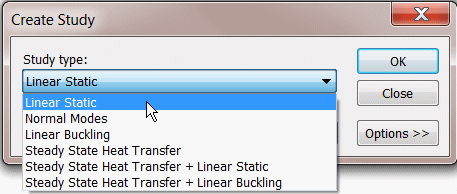
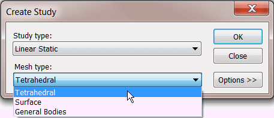
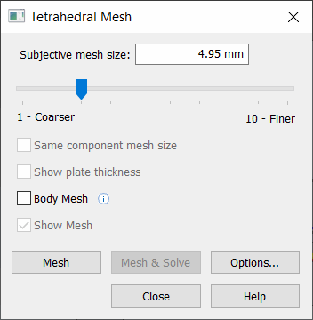
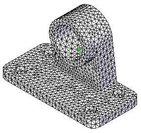
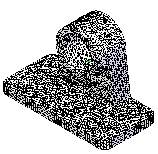

Activity: Use subjective mesh sizing
For information about meshes, mesh quality, and how you can refine the mesh to improve results, see the following help topics:
-
Open the file FE_bearing.par.
Simulation models are delivered in the \Program Files\Siemens\Solid Edge 2023\Training\Simulation folder.

-
Create a study:
-
Choose Simulation tab→Study group→Material List→Stainless Steel.

-
Select New Study.

-
In the Create Study dialog box, choose the following:
-
Study type = Linear Static

-
Mesh type = Tetrahedral

-
Click OK.
-
-
-
Mesh the bearing:
-
Choose Simulation tab→Mesh group→Mesh.

-
Click the Mesh button.
Note:-
You can use the Mesh command without defining loads and constraints.
-
In the absence of loads and constraints, you cannot solve the study.
The NX Nastran mesh processing starts and displays a progress meter.

-
After a short period of time, the part will display with a tetrahedral mesh.

-
-
Change the subjective mesh size:
For your previous mesh, you used the default mesh size, a value of 3 on a scale of 1 to 10.

-
Change the Subjective mesh by moving the slider to a value of 4.
-
Mesh the bearing again and see the increase in the number of elements.

-
Change this to a value of 7 using the slider.
-
Mesh the bearing again and see the increase in the number of elements.

Note:-
Note that each increase in the number of elements requires an increase in time to mesh the part.
-
An increase in the number of elements results in increased accuracy of the analysis; however, you must decide whether this improvement in accuracy is worth the additional processing time.
-
-
-
Close this file:
How do I
Mesh the modelActivity: Apply a surface mesh to a sheet metal part
Activity: Size the mesh on an edge
Activity: Size the mesh on a surface
Learn more
MeshesMesh sizing
Examining the mesh
Identifying areas of poor mesh quality
Look up more details
Mesh dialog boxMesh Options dialog box
Body Size dialog box
Edge Size dialog box
Surface Size dialog box
Check Element Quality